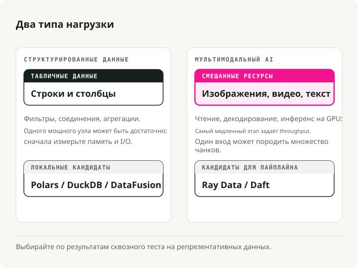
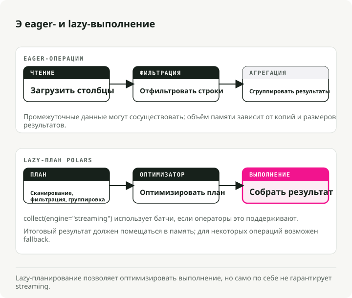
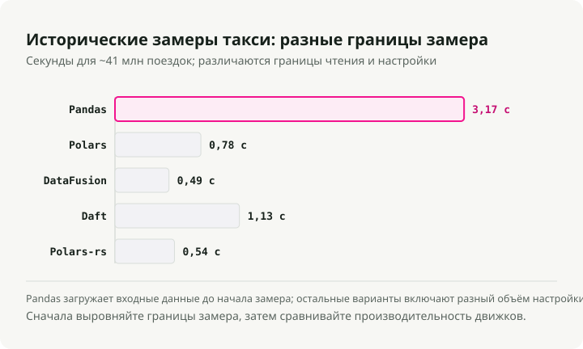
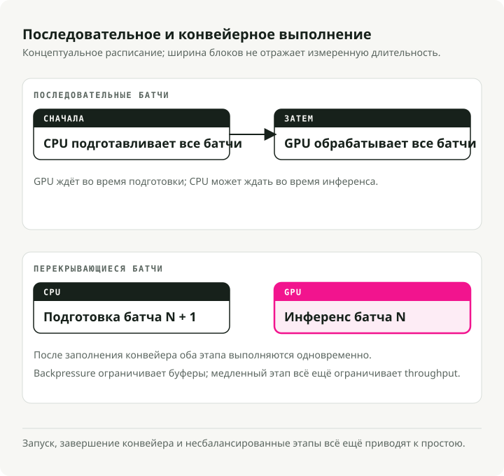
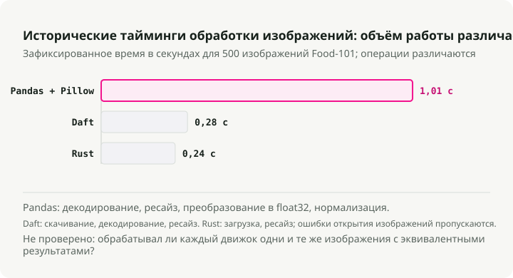
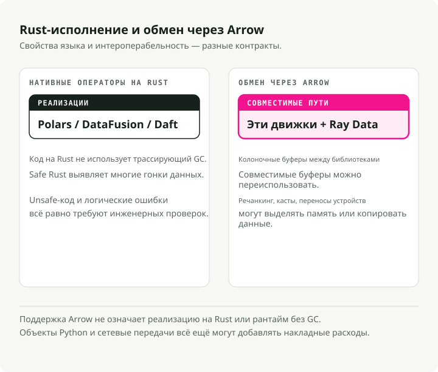
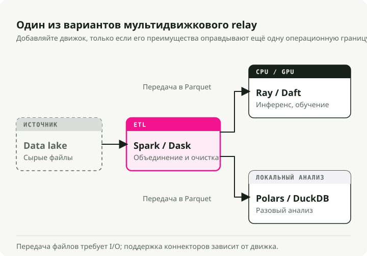
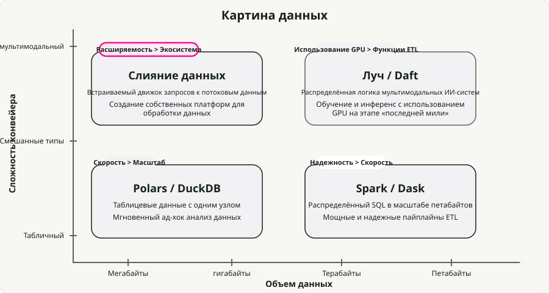

Автоматический перевод
Эта статья была автоматически переведена с оригинальной английской версии.
Сравнение современных движков обработки данных: Polars, DataFusion, Daft, Ray Data, Pandas и Spark
Годами Pandas закрывал табличную обработку в памяти, а Apache Spark — распределённую. Такое разделение работало нормально, пока данные оставались структурированными.
Сегодня нагрузки уже не всегда структурированы. Конвейеры для изображений, аудио и видео теперь идут рядом с табличными, а как только в контур попадает GPU inference, сборка мусора в JVM и GIL в Python перестают быть мелкими неудобствами и становятся узким местом. Это одна из главных причин, почему новое поколение движков на Rust и Apache Arrow так быстро набрало популярность.
За последний год я перевёл большую часть своих single-node пайплайнов на Polars и захотел понять, как он реально смотрится на фоне остального нового стека. Поэтому я прогнал бенчмарки для Polars, DataFusion, Daft, Ray Data и Spark на реальных датасетах — поездки такси в NYC для табличной части и изображения Food-101 для мультимодальной.
Весь код лежит в репозитории engine-comparison-demo. Клонируйте его и прогоните бенчмарки на своём железе — ваши цифры будут отличаться от моих, и в этом весь смысл.
Кратко: в удобных для маркетинга бенчмарках движки с нативным Rust дают ускорение до 94x относительно Pandas на одной машине. На реальных нагрузках прирост будет скромнее, но стабилен — Polars и DataFusion оба являются хорошими вариантами по умолчанию. Для мультимодальных пайплайнов конвейерные движки вроде Ray Data и Daft работают до 18x быстрее Spark, потому что действительно удерживают GPU загруженными. Универсального победителя нет. Правильный выбор зависит от ваших данных, масштаба и того, участвуют ли в контуре GPU.
Типы нагрузок обработки данных
Движки специализируются, поэтому первый вопрос — какой именно тип нагрузки у вас есть. Главное разделение — structured vs. multimodal.

Структурированные / табличные данные. Фильтрация, агрегации, join. CPU-bound, обычно в памяти. Значительная часть такой работы выполняется на распределённых кластерах, которые вообще не должны были быть распределёнными — около 90% запросов обрабатывают менее 1 TB данных, а это сегодня спокойно помещается на одной машине.
Мультимодальный AI. Изображения, аудио, видео. На этапе inference это GPU-bound, но убивает производительность CPU-препроцессинг. Модели deep learning потребляют данные быстрее, чем CPU успевает их декодировать, поэтому на стандартном g6.xlarge (4 CPU на GPU) загрузка GPU падает ниже 20%. Весь пайплайн в итоге ограничивается тем, насколько быстро вы можете подать данные в GPU.
Новые движки нацелены на оба сценария. Rust даёт им скорость, Arrow — zero-copy обмен данными между процессами, а streaming execution позволяет обрабатывать датасеты, которые больше объёма RAM.
Часть 1: Обработка на одной машине
Узкое место Pandas — не баг. Это следствие архитектуры. Pandas жадно загружает файлы в RAM, копирует промежуточные результаты почти на каждой операции и остаётся однопоточным из-за GIL. В бенчмарках PDS-H при scale factor 10 Pandas тратит около 365 секунд на выполнение стандартного набора запросов. Streaming-движок Polars выполняет ту же работу за 3.89 секунды — примерно в 94 раза быстрее.

Polars: обработка табличных данных
Polars во многих командах, с которыми я общался, уже заменил Pandas как стандартный выбор для серьёзного локального ETL. Он написан на Rust и использует lazy execution: вместо немедленного выполнения каждой строки кода он строит план запроса, оптимизирует его (predicate pushdown, projection pruning, column pruning), а затем исполняет на всех ядрах CPU потоковыми батчами.
Разрыв растёт вместе с объёмом данных. При scale factor 100 (~100 GB) streaming-движок Polars завершил выполнение за 23.94 секунды против 152.27 секунды у собственного in-memory движка — примерно в 6 раз быстрее на данных, которые больше RAM.
Из engine_comparison_examples.ipynb:
import polars as pl
# scan_parquet reads only the schema — no data loaded yet
q = (
pl.scan_parquet("yellow_tripdata_2024-01.parquet")
.filter(
(pl.col("trip_distance") > 5.0)
& (pl.col("total_amount") > 30.0)
)
.group_by("payment_type")
.agg(
pl.col("total_amount").mean().alias("avg_fare"),
pl.col("trip_distance").mean().alias("avg_distance"),
pl.len().alias("trip_count"),
)
)
# The entire plan is optimized and executed here, in parallel
result = q.collect()
Разница с Pandas — не в API. Она в архитектуре. Polars сначала строит план и оптимизирует весь пайплайн, прежде чем вообще трогать данные. filter проталкивается вниз до Parquet reader, поэтому целые row group просто пропускаются. С диска читаются только те колонки, которые реально участвуют в запросе. Pandas так не умеет — каждая строка исполняется сразу после парсинга, а промежуточные копии появляются повсюду.
Apache DataFusion: расширяемый query engine
Если Polars — это библиотека, которую вы используете напрямую, то DataFusion — это движок, на базе которого строят другие движки. На нём работают InfluxDB 3.0, GreptimeDB и Comet Spark accelerator от Apple.
В ноябре 2024 года DataFusion стал самым быстрым single-node движком для запросов к Parquet в ClickBench, обогнав DuckDB, chDB и ClickHouse на том же железе. Позже команда Embucket прогнала на нём TPC-H со scale factor 1000 (~1 TB) на одной машине. Это полезная цифра, о которой стоит помнить всякий раз, когда кто-то говорит, что ему нужен кластер.
Из engine_comparison_examples.ipynb:
from datafusion import SessionContext
ctx = SessionContext()
ctx.register_parquet("taxi", "yellow_tripdata_2024-01.parquet")
# SQL executed directly against Parquet — no intermediate copies
df = ctx.sql("""
SELECT payment_type,
COUNT(*) AS trip_count,
AVG(trip_distance) AS avg_distance,
AVG(total_amount) AS avg_fare
FROM taxi
WHERE trip_distance > 5.0 AND total_amount > 30.0
GROUP BY payment_type
ORDER BY trip_count DESC
""")
result = df.to_pandas()
Сильная сторона DataFusion — модульность. API расширения покрывают custom catalogs, table providers, optimizer rules и execution plans — поэтому он постоянно всплывает там, где кто-то строит собственную data platform или встраивает query engine в свой продукт.
Daft: обработка мультимодальных данных
Daft — единственный из списка, кто всерьёз относится к мультимодальным данным. Изображения, аудио, видео, эмбеддинги — это полноценные типы внутри DataFrame, а не непрозрачные байты. Pandas воспринимает изображение как массив байт, Spark сериализует его через JVM, а в Daft есть нативные Rust-выражения для декодирования изображений, загрузки URL и получения тензоров без Python-цикла посередине.
Из engine_comparison_examples.ipynb:
import daft
df = daft.read_parquet("yellow_tripdata_2024-01.parquet")
result = (
df.where(
(daft.col("trip_distance") > 5.0)
& (daft.col("total_amount") > 30.0)
)
.groupby("payment_type")
.agg(
daft.col("total_amount").mean().alias("avg_fare"),
daft.col("trip_distance").mean().alias("avg_distance"),
daft.col("trip_distance").count().alias("trip_count"),
)
.collect()
)
API покажется знакомым, если вы знаете Pandas, но сам движок — это тот же стек Rust + Arrow, что и в Polars и DataFusion. Daft особенно окупается тогда, когда «строки» вашего DataFrame — это изображения, PDF или тензоры.
Бенчмарк: производительность на одной машине
Я прогнал все четыре движка, плюс нативный Rust через Polars-rs, на ~41M поездок жёлтого такси NYC за весь 2024 год. Полные результаты — в demo repo:

На таком размере (~660 MB Parquet) любой современный движок работает быстро. Громкая цифра 94x для Polars против Pandas взята из PDS-H — это синтетический аналитический бенчмарк. На моей нагрузке с 41M строк я получил реальный и стабильный прирост относительно Pandas, но и близко не 94x. Более интересный результат в том, что Polars, DataFusion, Daft и чистый Rust через Polars-rs показывают на этой нагрузке примерно один и тот же уровень. DataFusion немного обходит остальных по общему времени. Polars — самый приятный в разработке и хороший универсальный вариант.
Часть 2: Работа с мультимодальными данными
Табличный ETL обычно уменьшает объём данных: фильтруем, агрегируем, записываем меньше, чем читаем. Мультимодальные AI-пайплайны делают обратное. Один путь к документу может развернуться в десятки текстовых чанков и векторов эмбеддингов.
Spark воспринимает изображения и аудио как бинарные блобы. Любое обращение к ним из Python означает переход из JVM в Python через Py4J, обработку через Pillow или OpenCV, а затем обратную сериализацию. На многих реальных нагрузках именно этот round-trip и доминирует во времени выполнения.
Pipelined execution и загрузка GPU
Spark распараллеливает partition между ядрами, но проблема — в его stage-based (bulk synchronous) execution. Внутри одной task каждый шаг (загрузка, декодирование, классификация) выполняется последовательно на одном ядре без async overlap. И все task в stage должны завершиться до старта следующего stage. GPU простаивают, пока CPU готовят данные; CPU простаивают, пока GPU делают inference. Каждый stage материализует свой output до начала следующего, что вдобавок создаёт давление на память.

Pipelined execution — альтернатива. Вместо выполнения stage друг за другом движок перекрывает I/O, CPU-работу и GPU inference, так что в каждый момент времени ждёт только самый медленный компонент.
Бенчмарк: обработка изображений
Я прогнал бенчмарк обработки изображений на 500 реальных фотографиях из датасета Food-101. Результаты из demo repo:

Polars и DataFusion здесь не показаны, потому что у них нет нативных операций с изображениями — такая работа ушла бы в последовательный Python, и сравнение было бы некорректным. Важные цифры такие: нативные Rust-операции с изображениями в Daft в 3.6x быстрее, чем Pandas + Pillow, а чистый Rust — в 4.2x быстрее Pandas по всему пайплайну.
Часть 3: Распределённая обработка
Когда одной машины уже недостаточно, нужно выбрать, как распределять работу. Именно здесь архитектурные различия между движками начинают реально влиять на результат.
Apache Spark
Spark по-прежнему остаётся тем, к чему я бы потянулся для petabyte-scale табличного ETL с тяжёлыми shuffle. Fault tolerance через lineage в RDD работает, экосистема огромная (Databricks, EMR), а join на много TB — давно отработанный сценарий. AI-нагрузки — это как раз то место, где Spark разваливается. Task планируются на JVM executors, которые ничего не знают о GPU, поэтому GPU простаивают в ожидании CPU-препроцессинга.
from pyspark.sql import SparkSession
from pyspark.sql import functions as F
spark = SparkSession.builder \
.appName("TaxiETL") \
.config("spark.sql.adaptive.enabled", "true") \
.getOrCreate()
orders = spark.read.parquet("s3a://lake/taxi/*.parquet")
zones = spark.read.csv("s3a://lake/taxi_zones.csv", header=True)
# Spark excels at this: joining massive tables with a shuffle
result = (
orders
.filter(F.col("trip_distance") > 5.0)
.join(zones, orders.PULocationID == zones.LocationID, "inner")
.groupBy("Borough")
.agg(
F.sum("total_amount").alias("total_revenue"),
F.avg("total_amount").alias("avg_fare"),
)
.orderBy(F.desc("total_revenue"))
)
Ray Data: загрузка GPU
Ray Data изначально проектировался под AI-нагрузки. Вместо stage barriers, как в Spark, он использует streaming model, которая удерживает GPU постоянно загруженными. Ключевая возможность, ради которой он и нужен, — mixed resource scheduling: можно объявить, что одному actor требуется «1 GPU, 4 CPU», а другому — только CPU, и дальше Ray сам разбирается с остальным.
Amazon сообщил об экономии более $120 миллионов в год, переведя определённые нагрузки со Spark на Ray. В их PoC цифры были такими: на 91% лучшая cost efficiency и в 13x больше данных в час; в продакшене итоговая цифра стабилизировалась на 82% лучшей cost efficiency на GiB входных данных из S3.
import ray
ray.init()
ds = ray.data.read_images("s3://my-bucket/food101/")
class ImageClassifier:
def __init__(self):
import torch
from torchvision.models import resnet18, ResNet18_Weights
self.model = resnet18(weights=ResNet18_Weights.DEFAULT).cuda()
self.model.eval()
self.preprocess = ResNet18_Weights.DEFAULT.transforms()
def __call__(self, batch):
import torch
tensors = torch.stack([
self.preprocess(img) for img in batch["image"]
]).cuda()
with torch.no_grad():
preds = self.model(tensors)
return {
"prediction": preds.argmax(dim=1).cpu().numpy(),
"confidence": preds.max(dim=1).values.cpu().numpy(),
}
# ActorPoolStrategy creates persistent GPU workers
predictions = ds.map_batches(
ImageClassifier,
compute=ray.data.ActorPoolStrategy(size=4),
num_gpus=1,
batch_size=64,
)
predictions.write_parquet("s3://output/predictions/")
Одна деталь, которую полезно знать: при увеличении числа CPU на один GPU Ray Data масштабируется, тогда как другие движки выходят на плато. В бенчмарках Anyscale переход от соотношения CPU-to-GPU 4:1 к 32:1 дал ускорение в 3x на image inference, потому что CPU-потоки подачи данных наконец начали успевать за GPU.
Daft (distributed)
Daft масштабируется через свой движок Flotilla: по одному worker Swordfish на узел, а поверх — Flotilla, которая занимается cluster-wide scheduling. Swordfish отвечает за локальное выполнение на Rust и конвейеризует I/O и compute через streaming небольшими батчами, поэтому каждый узел остаётся загруженным, не ожидая следующий stage.
На четырёх мультимодальных нагрузках Daft с Flotilla работал в 2–18x быстрее Spark. На самой тяжёлой из них (video object detection с YOLO11n) Spark выполнялся более 3.5 часов, а Daft завершил работу менее чем за 12 минут — ускорение 18x, в основном потому, что Spark тратит это время на сериализацию и stage barriers.
Но есть и оговорка: Anyscale, компания, стоящая за Ray, опубликовала собственные бенчмарки, где Ray Data сокращает разрыв или даже выходит вперёд на инстансах с большим числом CPU при ручной настройке. Сейчас они фактически обгоняют друг друга поквартально.
import daft
from daft import col
# Daft's Flotilla engine distributes work across the cluster
df = daft.read_parquet("s3://data-lake/pdf_metadata/*.parquet")
# Download PDFs — Daft parallelizes downloads in Rust
df = df.with_column("pdf_bytes", col("pdf_url").url.download())
# Define a GPU UDF for embedding generation
@daft.udf(return_dtype=daft.DataType.list(daft.DataType.float32()))
class TextEmbedder:
def __init__(self):
from sentence_transformers import SentenceTransformer
self.model = SentenceTransformer("all-MiniLM-L6-v2", device="cuda")
def __call__(self, text_col):
texts = text_col.to_pylist()
embeddings = self.model.encode(texts, batch_size=32)
return [emb.tolist() for emb in embeddings]
# Daft schedules CPU downloads and GPU embeddings simultaneously
df = df.with_column("embedding", TextEmbedder(col("text")))
df.write_parquet("s3://output/embeddings/")
Сравнение распределённых движков
| Feature | Spark | Ray Data | Daft (Flotilla) |
|---|---|---|---|
| Execution Model | Одна task на ядро, partition-based | Streaming tasks и actors | Один Swordfish на узел, streaming batches |
| Strengths | Масштабный SQL/ETL, fault tolerance | Гетерогенные вычисления, насыщение GPU | Мультимодальный pipelining, bounded memory |
| GPU Utilization | Плохая (stage-based, нет overlap CPU/GPU) | Отличная (явное назначение ресурсов) | Отличная (async pipelining I/O-compute) |
| Tuning Burden | Высокая (executor memory, cores, partitions) | Средняя (размеры батчей, object store) | Низкая (движок сам управляет ресурсами) |
| Best For | Табличный ETL на petabyte | Training/inference со смешанными CPU+GPU | Загрузка мультимодальных данных для PyTorch |
Часть 4: Роль Rust и Arrow
Если посмотреть глубже самой конкуренции, более интересна именно конвергенция. Polars, Daft, DataFusion и core-часть Ray используют один и тот же фундамент: Apache Arrow как формат данных в памяти и Rust для конкурентного выполнения.

Это не просто архитектурная аккуратность. Arrow PyCapsule Interface (протокол __arrow_c_stream__) позволяет передавать данные между движками без сериализации: считать в DataFusion, передать результат в Polars или PyArrow с нулевой стоимостью; сделать мультимодальный препроцессинг в Daft и отдать Arrow-батчи напрямую в PyTorch DataLoader.
from datafusion import SessionContext
import polars as pl
# Compute in DataFusion (Rust-native execution)
ctx = SessionContext()
ctx.register_parquet("events", "events.parquet")
df = ctx.sql("""
SELECT user_id, COUNT(*) as event_count
FROM events WHERE event_type = 'purchase'
GROUP BY user_id HAVING COUNT(*) > 5
""")
# Zero-copy conversion to Arrow, then to Polars
arrow_table = df.to_arrow_table()
df_polars = pl.from_arrow(arrow_table)
# Continue analysis in Polars
result = df_polars.with_columns(
pl.col("event_count").rank().alias("rank")
).sort("rank")
Так почему Rust, а не JVM?
-
Нет пауз на сборку мусора. Ownership и borrowing заменяют GC, а значит нет stop-the-world пауз и непредсказуемых всплесков латентности. OOM-ошибки, которые появляются на масштабе в JVM-системах, в основном исчезают.
-
Нет налога на заголовки объектов. JVM добавляет 12–16 байт заголовка к каждому объекту. На миллиардах маленьких объектов это само по себе отдельный бюджет памяти. В Rust этого overhead нет.
-
Потокобезопасность на этапе компиляции. Система типов Rust отбрасывает data race ещё до сборки бинарника, поэтому многопоточное выполнение не сопровождается обычным набором тонких concurrency-багов.
В сочетании с колоночной раскладкой памяти Arrow исчезает bottleneck сериализации, который в legacy JVM-стеках съедает до 30% CPU cycles.
Часть 5: Использование нескольких движков
Честный ответ в том, что не нужно выбирать один движок. Их нужно комбинировать.

В продакшене это обычно выглядит как эстафета. Сырые данные в lake очищаются и джойнятся через Spark (или Dask, если команда работает только на Python) в таблицы Parquet или Delta. Затем эти таблицы уходят в Ray Data или Daft для last-mile задач — GPU inference, генерации эмбеддингов, мультимодальных преобразований — под которые Spark никогда не проектировался. Для ad-hoc анализа и локальной разработки Polars и DuckDB дают мгновенную обратную связь без поднятия кластера.
Что делает такую композицию возможной, так это открытые форматы: Parquet, Delta, Iceberg, Arrow. Каждый движок в этом стеке умеет читать и писать их нативно, поэтому передача между стадиями — это просто путь к файлу.
Сводка по сценариям использования движков

| Task | Recommended Tool | Trade-off |
|---|---|---|
| Ad-hoc analysis на ноутбуке | Polars / DuckDB | Speed > Scale |
| Massive SQL ETL (petabyte) | Apache Spark | Reliability > Speed |
| Масштабирование в Python-native | Dask | Simplicity > Optimization |
| Training LLMs / computer vision | Ray Data | GPU Utilization > ETL Features |
| Загрузка мультимодальных данных | Daft | Developer Experience > Ecosystem |
| Построение custom query engines | DataFusion | Extensibility > Out-of-box Features |
Диагональное масштабирование
Долгое время выбор был таким: scale up (машина побольше) или scale out (машин побольше). Polars Cloud делает нечто промежуточное, что они называют diagonal scaling: горизонтально масштабироваться во время чтения из cloud storage, чтобы выжать максимум из I/O, а затем схлопываться в один большой узел после того, как фильтры и агрегации сократили объём данных, полностью пропуская distributed shuffle.
Контринтуитивный момент в том, что более крупный и дорогой инстанс может оказаться дешевле на джобу, потому что повышает загрузку GPU настолько, что общее время выполнения падает быстрее, чем растёт почасовая ставка.
Попробуйте сами
В репозитории с демо есть всё, что нужно, чтобы воспроизвести эти бенчмарки:
# Install dependencies
uv sync
# Run the tabular benchmark (~2.9M NYC taxi trips)
uv run python -m engine_comparison.benchmarks.tabular
# Run the multimodal benchmark (500 real food photos)
uv run python -m engine_comparison.benchmarks.multimodal
# Run native Rust benchmarks (Polars-rs + image crate)
cd rust_benchmark && cargo run --release && cd ..
В репозитории также есть ноутбуки для side-by-side сравнения API и конфигурации Docker Compose для локальных распределённых запусков Spark, Ray и Daft.
Ключевые выводы
-
Не распределяйте, если в этом нет необходимости. Polars и DataFusion справляются примерно до ~1 TB на одной машине и стабильно обгоняют Pandas (а в тяжёлых аналитических бенчмарках вроде PDS-H — до 94x). Переходите к кластеру только тогда, когда действительно упёрлись в пределы single-node, а не заранее.
-
Ограничения Pandas заложены в архитектуре. Eager execution, однопоточность, промежуточные копии — это осознанные проектные решения, которые превращаются в bottleneck на больших данных. Lazy execution с predicate pushdown и column pruning — вот что меняет картину.
-
Pipelined execution лучше stage barriers для GPU-нагрузок. Стадии в Spark оставляют GPU простаивать, пока CPU делают препроцессинг. Ray Data и Daft перекрывают I/O, CPU и GPU-работу так, чтобы ни один ресурс не ждал следующей стадии.
-
Используйте каждый движок там, где он силён. Spark — для petabyte ETL, Polars и DuckDB — для ad-hoc анализа, Ray Data — для GPU training-пайплайнов, Daft — для загрузки мультимодальных данных, DataFusion — для custom query engines.
-
Rust + Arrow — общий фундамент. Не случайно Polars, DataFusion, Daft и Ray сходятся именно здесь — это устраняет паузы GC, накладные расходы на кросс-процессную сериализацию и целый класс concurrency-багов.
Если не знаете, с чего начать: Polars на одной машине, затем Daft или Ray Data, когда в контуре появляются GPU. Spark — только когда у вас действительно petabyte.
Ссылки
Бенчмарки и данные о производительности
- Бенчмарки Polars PDS-H - streaming против Pandas на SF-10 (94x) и SF-100 (6.4x относительно in-memory)
- Результаты DataFusion в ClickBench (ноябрь 2024) - самый быстрый single-node движок запросов к Parquet
- Embucket: TPC-H SF-1000 на DataFusion - полный TPC-H на ~1 TB на одной машине
- Миграция Amazon со Spark на Ray - экономия $120M/год, 82% improvement по production cost efficiency
- Бенчмарки Daft Flotilla - в 2–18x быстрее Spark на мультимодальных нагрузках
- Бенчмарки Anyscale: Ray vs. Daft - Ray Data ~30% среднего ускорения на мультимодальных сценариях
Движки и фреймворки
- Polars - библиотека DataFrame на Rust с lazy execution
- Apache DataFusion - встраиваемый query engine на Rust (GitHub)
- Daft - distributed DataFrame с нативной поддержкой мультимодальности
- Ray - фреймворк распределённых вычислений для AI (Data Internals)
- Apache Spark - распределённый движок ETL и SQL
- DuckDB - in-process аналитический SQL-движок
- Dask - parallel computing в Python-native стиле
Архитектура и экосистема
- Polars Cloud: Diagonal Scaling - динамическое вертикальное/горизонтальное масштабирование
- Архитектура Daft Flotilla - распределённый движок Swordfish + Flotilla
- Apache DataFusion Comet - ускоритель Spark, изначально разработанный в Apple
- Apache Arrow - колоночный формат данных в памяти (Flight RPC, PyCapsule Interface)
- InfluxDB 3.0 + DataFusion - time-series база данных на базе DataFusion
- GreptimeDB - база данных observability, использующая DataFusion
Демонстрационный репозиторий
- engine-comparison-demo - сопутствующий код к этой статье: бенчмарки, ноутбуки и Docker Compose для Spark/Ray/Daft
Датасеты
- NYC Taxi Trip Records - данные жёлтого такси NYC TLC (Parquet, ~2.9M строк/месяц)
- Food-101 Dataset - 101K изображений еды от ETH Zurich (Bossard et al., ECCV 2014)